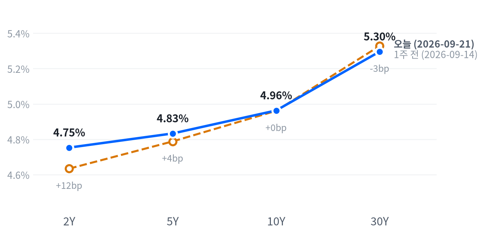

월요일 뉴욕증시는 반도체·AI 관련주가 이끈 매수세에 힘입어 나스닥이 2.26% 오른 27,122로 사상 최고 종가를 새로 썼습니다. 인텔이 12% 급등하고 AMD가 장중 시가총액 1조달러를 넘어서며 필라델피아반도체지수도 3% 넘게 뛰었습니다.
국제유가는 이란과의 외교적 대화 가능성에 WTI가 하루 만에 8.15% 급락했지만, 이 낙폭에는 10월물 만기 효과가 섞였을 가능성이 있어 그대로 받아들이기는 이릅니다. 채권시장은 장기금리가 내리고 단기금리는 버티며 커브가 다시 좁아졌습니다.
월요일 증시를 지배한 것은 반도체·AI 관련주의 광폭 랠리였습니다. 메타의 신규 AI 에이전트 '뮤즈' 소식과 트럼프·시진핑 국빈 만찬 기대가 겹치며 나스닥이 2.26% 올라 사상 최고 종가를 새로 썼고, 같은 날 WTI는 8.15% 급락했습니다.
반도체 랠리는 AI 인프라 투자 사이클에 대한 낙관을 다시 확인시키는 경로로 지수를 밀어 올렸고, 유가 급락은 단기적으로 물가 완화 기대를 자극해 장기금리(10년물 -3.3bp, 30년물 -3.1bp)를 끌어내리는 통로로 작동했습니다. 다만 유가 낙폭 중 상당 부분이 10월물 만기 효과일 가능성이 있어, 이 물가 경로를 액면 그대로 받아들이기는 이릅니다.
포지션은 2~6주 시계에서 유지합니다 — 어제 걸어둔 트리거가 일곱 자산군 전부 충족되지 않아 스탠스 표의 등급을 그대로 가져갑니다. 주식은 대형 기술주 쏠림이 이어지는 한 중립을 지키고, 채권은 30년물이 5.05%와 5.40% 사이에 갇혀 있는 한 숏 바이어스를 유지하며, 달러·귀금속·에너지·메모리·AI 인프라도 각자의 문턱을 넘지 못해 전일 등급을 그대로 이어갑니다.
S&P500이 50일선을 3% 이상 웃돌거나 VIX가 22를 넘으면 주식 판단부터 다시 열고, 30년물이 5.40%를 다시 뚫거나 5.05% 아래로 내려오면 채권 스탠스를 재검토합니다. 유가가 뉴스 기반 낙폭(약 -4.5%)보다 훨씬 크게 되돌아오거나 만기 효과가 해소되지 않는 것으로 확인되면 오늘의 물가 완화 해석 자체를 접습니다.
| 지수 | 종가 | 등락률 | 기준일 |
|---|---|---|---|
| 닛케이225 | 65,018.95 | +1.38% | 9월 18일 |
| 항셍 | 24,750.78 | +0.60% | 9월 18일 |
| 상해종합 | 3,911.87 | +0.94% | 9월 18일 |
| DAX | 25,304.06 | -1.60% | 9월 18일 |
| FTSE100 | 10,659.10 | -1.45% | 9월 18일 |
| 유로스톡스50 | 6,236.20 | -1.37% | 9월 18일 |
| VIX | 14.87 | +0.41% | 9월 21일 |
유럽은 미국과 엇갈렸습니다 — DAX·FTSE100·유로스톡스50이 나란히 1.4~1.6%씩 밀리며 지난 금요일을 하락으로 마쳤는데, 월요일 미국은 반도체 랠리로 2%대 급등했습니다. 아시아는 닛케이·항셍·상해종합이 모두 0.6~1.4% 오르며 평균 +0.97%로 미국의 상승 쪽에 먼저 줄을 섰고, 지역 안에서 방향이 갈리지도 않았습니다.
야간 선물은 상승 출발을 예고했습니다. S&P 선물(ES)은 오전 7:30(ET) 7,771에서 고점을 찍은 뒤 저녁 6시 7,721까지 밀려 하루 변동폭이 0.65%에 그쳤죠. 나스닥 선물(NQ)도 오전 8시 30,275 고점에서 저녁 6시 29,945까지 1.10% 폭으로 움직였습니다. 이 흐름은 현물 개장까지 그대로 이어져, S&P +0.55%, 나스닥 +0.77%, 러셀2000 +0.48% 갭업으로 시작하며 상승 출발을 확인시켜줬습니다.
S&P와 나스닥 모두 장 후반까지 매수세가 이어지며 나스닥은 고점권 마감, S&P는 중단 마감을 기록했습니다. 러셀2000은 중단 마감에 머물러 대형주만큼의 힘을 받지 못했습니다.
이날 시장을 움직인 것은 인텔·AMD 등 반도체 종목이었죠. 메타의 신규 AI 에이전트 '뮤즈' 소식이 서버 CPU 공급망 기대를 자극해 인텔이 12% 급등했고, AMD는 주가가 610달러를 넘으며 장중 시가총액 1조달러를 돌파했습니다. 여기에 트럼프 대통령과 시진핑 주석의 국빈 만찬에 AI 거물들이 다수 참석할 것이라는 소식까지 겹쳐 AI 트레이드 전반의 낙관론을 키웠습니다. 시간외 국제유가 급락(WTI -8.15%)은 트럼프 대통령이 이란과의 대화 가능성을 열어둔 점과 이란 페제시키안 대통령의 유엔총회 참석 방문 소식이 지정학 프리미엄을 되돌린 결과라는 것이 공통된 해석입니다.
| 지수 | 종가 | 등락률 |
|---|---|---|
| 나스닥 | 27,122.09 | +2.26% |
| S&P500 | 7,764.70 | +1.49% |
| 다우존스 | 52,048.83 | +0.71% |
| 러셀2000 | 2,875.36 | +0.52% |
| S&P500 성장주* | 140.13 | +0.55% |
| S&P500 가치주* | 231.89 | -0.45% |
| 섹터 | 등락률 |
|---|---|
| 기술 | +0.82% |
| 산업재 | +0.44% |
| 금융 | -0.04% |
| 헬스케어 | -0.25% |
| 에너지 | -0.26% |
| 경기소비재 | -0.32% |
| 필수소비재 | -0.83% |
| 부동산 | -0.95% |
| 커뮤니케이션 | -1.37% |
| 유틸리티 | -1.42% |
| 소재 | -1.42% |
나스닥은 27,122로 최근 2년(504거래일)을 통틀어 가장 높은 자리에서 마감했고, S&P500(7,765)도 이보다 높았던 날이 이틀뿐일 만큼 높은 자리입니다. 러셀2000은 2,875로 높은 쪽 15% 안에 들지만 세 지수 중 가장 덜 뜨거웠습니다. 오늘 나스닥의 상승폭은 평소 하루 변동폭의 2.1배, S&P는 2.2배로 두 지수 모두 뚜렷하게 큰 하루였습니다.
이번 상승 대부분은 반도체·AI 관련주에서 나왔습니다. 블룸버그에 따르면 메타의 신규 AI 에이전트 '뮤즈' 소식이 서버 CPU 공급망 기대를 자극해 인텔이 두 자릿수로 급등했고, AMD는 주가가 610달러를 넘어서며 장중 시가총액 1조달러를 돌파했습니다. 필라델피아반도체지수(SOX)도 함께 큰 폭으로 올랐죠. 다우와 러셀2000은 상대적으로 잠잠했는데, 다우(+0.71%)와 러셀2000(+0.52%)의 완만한 상승은 이번 랠리가 반도체·대형 기술주에 집중됐다는 뜻입니다.
나스닥은 개장 직후 오전 9:30(ET) 시가 대비 -0.03%인 26,718까지 살짝 밀렸습니다. 이후 꾸준히 올라 오후 3:30 시가 대비 +1.71%인 27,184로 고점을 찍고 27,121 부근에서 마감했습니다. S&P도 같은 시각에 저점(-0.02%)과 고점(+1.12%)을 만들며 거의 같은 궤적을 그렸습니다.
엔비디아는 개장 직후 저점(221.56달러, 오전 9:30)을 찍은 뒤 오후 2:30 228.50달러까지 오르며 반도체 랠리의 색깔을 그대로 보여줬습니다. 러셀2000은 오전 9:30 저점 이후 낮 12시 고점을 찍었을 뿐 대형주만큼의 힘은 받지 못했습니다.
성장주 지수(+0.55%)가 가치주 지수(-0.45%)를 웃돈 것도 이번 랠리가 성장·기술주 중심이었음을 보여주는데, 이 수치는 지난 금요일(9월 18일) 종가 기준이라 오늘의 실제 격차는 이보다 더 벌어졌을 가능성이 있습니다.
앞서 살펴본 대로 나스닥과 S&P가 고점권 마감을 지킨 것은 매수세가 장 후반까지 이어졌다는 뜻이고, 이는 오늘 상승이 장중 반짝 반등에 그치지 않았다는 근거가 됩니다. 다만 러셀2000이 중단 마감에 머문 것은 이번 랠리가 대형 기술주 중심에서 아직 소형주 전반으로 번지지 않았다는 뜻이기도 하죠. 그날 시장을 움직인 공통된 힘의 45.8%가 주식 쪽에서 나왔다는 점도, 이번 상승이 몇몇 종목만이 아니라 지수 전반을 끌어올린 폭넓은 힘이었음을 보여줍니다. 변동성 지수는 지난 두 해 가운데 이보다 낮았던 날이 쉰 날뿐일 정도로 낮은 편에 머물러, 오늘 같은 급등에도 시장이 크게 긴장하지 않았다는 뜻으로 읽힙니다.
| 만기 | 종가 | 전일比(bp) | 1주 전 | 주간 변화(bp) |
|---|---|---|---|---|
| 2Y | 4.753% | +1.0 | 4.634% | +11.9 |
| 5Y | 4.833% | -1.9 | 4.788% | +4.5 |
| 10Y | 4.963% | -3.3 | 4.961% | +0.2 |
| 30Y | 5.296% | -3.1 | 5.328% | -3.2 |

30년물은 5.296%로 최근 2년(504거래일) 가운데 이보다 높았던 날이 이레뿐일 만큼 여전히 고점권에 있고, 10년물(4.963%)도 이보다 높았던 날이 나흘뿐입니다. 지난 1주일 사이 2년물은 11.9bp 오르고 30년물은 3.2bp 내리며 커브 앞뒤가 반대 방향으로 움직였습니다. 오늘 하루치 30년물 하락(-3.1bp)은 최근 두 달 평소 움직임과 비슷한 보통 수준이었습니다.
2년물과 10년물의 격차(2s10s)는 21.0bp로 전일(25.3bp)보다 4.3bp 좁혀졌습니다. 1주일 전(32.7bp)과 비교하면 격차는 11.7bp나 줄었는데, 2년물이 오르고 30년물이 내리는 서로 다른 방향이 겹쳐 만든 트위스트 성격의 플래트닝입니다. 5년물과 30년물의 격차(5s30s)는 46.3bp로 1주 전(54.0bp)보다 좁아졌습니다.
지난주 후반(9월 18일 기준) 국채금리 분해를 보면 10년물의 하루 변화(+7bp) 중 실질금리가 +7bp를 차지하고 기대인플레이션은 거의 변화가 없었습니다. 5년물도 비슷해서 실질금리가 +9bp, 기대인플레이션은 -1bp였죠. 즉 그 시점까지의 상승은 기대인플레이션이 아니라 실질금리(성장 기대·수급 등) 쪽에서 온 움직임이었다는 뜻입니다. 같은 기간 기간프리미엄(만기가 길수록 더 얹어 받는 값)도 주간 8bp 올라, 불확실성 프리미엄이 실질금리 상승의 한 축이었을 가능성을 뒷받침합니다.
오늘(9월 21일) 국채시장은 이 흐름과 결이 다릅니다. 유가가 하루 만에 8% 넘게 밀리며 물가 완화 기대를 자극해 10년물과 30년물이 각각 3bp 안팎 내렸고, 반면 2년물은 오히려 1bp 올랐습니다. 장기물만 더 크게 내린 배경에는 정책금리 경로가 있죠. CME 페드워치 기준 10월 28일 FOMC 25bp 추가 인상 확률은 9월 20일 종가 기준 59.7%로 9월 16일 회견 직후의 49%보다 높아져 있었는데(관측 시점이 달라 완전한 동일 비교는 아닙니다), 이 인상 우위가 단기물을 떠받치고 유가발 디스인플레이션 기대가 장기물만 끌어내렸다는 것이 가장 설득력 있는 설명입니다. 다만 이 경로를 확정하려면 손익분기인플레이션 같은 별도 지표로 더 확인해야 하는 가설 단계입니다.
향후 5년간의 평균 기대금리를 보여주는 5년 뒤 5년 금리는 9월 18일 기준 5.16%로 전일 대비 6bp 올랐습니다. 이 값에는 실질금리(2.81%)와 기대인플레이션(2.35%)이 함께 담겨 있어, 시장이 그 시점에 무엇을 보고 있었는지의 대략적인 스냅샷 정도로 읽는 편이 안전합니다.
국채 수급도 함께 봐야 합니다. 지난 9월 15일 20년물 입찰에서는 낙찰금리가 5.42%로 나와 이 구간 공급 부담이 여전했고, 9월 17일 10년물 입찰은 응찰배율 2.24배·간접낙찰 51.1%로 무난하게 소화됐습니다. 듀레이션이 긴 채권일수록 같은 금리 변화에도 가격이 더 크게 움직이는 만큼, 30년물처럼 고점권에 머문 구간에서는 방향이 바뀔 때 가격 충격도 그만큼 커진다는 점을 염두에 둘 필요가 있습니다.
신용 스프레드는 위험선호가 여전히 살아 있음을 뒷받침합니다. 하이일드 스프레드는 9월 18일 기준 2.68%포인트로 하루 2bp 좁혀졌고, 투자등급 스프레드도 0.77%포인트로 1bp 좁혀졌습니다. 국채금리가 뒤숭숭한 흐름을 보이는 동안에도 회사채 시장은 오히려 위험선호를 확인해준 셈입니다.
| 통화쌍 | 종가 | 등락률 |
|---|---|---|
| DXY | 100.41 | +0.19% |
| USD/KRW | 1,384.86 | +0.39% |
| USD/JPY | 157.05 | +0.59% |
| EUR/USD | 1.1480 | +0.03% |
달러지수(DXY)는 100.41로 최근 2년(504거래일)의 한가운데쯤에 자리하고 있습니다. 오늘 상승폭(+0.19%)은 평소 하루 변동폭의 0.64배로 보통 수준이었고, 엔화(157.05엔)도 같은 구간 한가운데, 원화(1,385원)는 낮은 쪽 19% 안에 듭니다.
오늘 달러가 위험선호 랠리에도 오히려 오른 것은 흔한 조합이 아닙니다. 최근 60세션 기준 주식과 달러의 상관은 -0.29로 여전히 반대 방향이지만 그 강도는 직전 구간(-0.61)보다 크게 느슨해졌고, 2년물 금리가 오늘도 1bp 오르며 채권 부분에서 짚은 10월 FOMC 추가 인상 확률 상승 흐름과 맞물려 단기 금리 우위가 위험선호발 달러 매도 압력을 상쇄했을 가능성이 있습니다. 다만 이 경로를 확정하려면 실효금리차나 자금흐름 데이터로 더 확인해야 합니다.
엔/달러는 도쿄 새벽 시간대(오전 2시 ET) 156.57엔 저점을 찍은 뒤 되밀려 오후 4:30(ET) 157.53엔 고점을 만들고 157.25엔 근방에서 하루를 마쳤습니다. 유로/달러는 1.1480으로 하루 종일 사실상 정지 상태였습니다.
| 품목 | 종가 | 등락률 |
|---|---|---|
| WTI | $92.13 | -8.15% |
| Brent | $96.16 | -7.42% |
| 천연가스 | $2.833 | -2.71% |
| 금 | $4,409.30 | -0.35% |
WTI는 92.13달러로 지난 두 해 흐름 가운데 높은 쪽 12% 안에 들 만큼 여전히 높은 편이고, 금은 4,409달러로 같은 구간의 한가운데쯤입니다. 오늘 금의 하락폭(-0.35%)은 평소 하루 변동폭의 0.23배에 그쳐 사실상 잠잠했던 반면, WTI는 하루 만에 8.15%나 급락해 최근 2개월 평소 변동폭의 2.5배를 넘는 매우 큰 움직임이었습니다.
이 낙폭 전부를 지정학 뉴스만으로 설명하기는 어렵습니다. 오늘 장중(개장~마감) 흐름만 보면 WTI는 93.99달러에서 92.17달러로 약 1.9% 내리는 데 그쳤고, 오히려 새벽(오전 2시 ET) 94.78달러 고점에서 낮 12:30(ET) 91.19달러 저점까지 밀렸다가 소폭 되돌렸습니다. 그런데 전일 대비로 계산한 등락률은 -8.15%에 달해 정규 세션의 움직임보다 훨씬 크죠. 이렇게 벌어진 배경에는 10월물 인도가 이맘때(9월 하순) 마무리되는 시점과 겹친 사정이 있습니다. 연속선물 데이터가 만기가 짧은 계약에서 다음 계약으로 넘어가며 생기는 가격 격차가 하루치 등락률에 섞였을 가능성이 있습니다. 실제로 CNBC 등 뉴스는 이날 WTI 낙폭을 -4.5%에서 -4.7% 안팎으로 더 작게 보도했는데, 이는 트럼프 대통령이 이란과의 대화 가능성을 열어두고 페제시키안 이란 대통령이 유엔총회 참석차 뉴욕을 방문한다는 소식에 지정학 프리미엄이 되돌려진 결과로 풀이되죠. 다만 주말 사이 후티 반군의 리야드 공격 보도도 있어 리스크 자체가 해소된 것은 아니라는 점도 함께 봐야 합니다.
WTI와 브렌트의 격차는 4.03달러(92.13달러 대 96.16달러)로 브렌트가 여전히 웃돈을 받고 있습니다. 금이 하루 종일 잠잠했던 것은 실질금리 흐름과 맞닿아 있습니다 — 10년 실질금리는 지난주 후반까지 오히려 오르고 있어(9월 18일 기준 하루 +7bp, 주간 +8bp) 금 보유비용을 낮추는 경로가 아직 힘을 받지 못하고 있습니다. 금은 개장 후 오전 10시(ET) 4,360달러까지 밀렸다가 저녁 8시 4,414달러까지 되오르며 4,412달러 근방에서 마감했습니다.
천연가스는 2.833달러로 2.71% 내렸는데, 이는 원유 급락에 따른 에너지 섹터 전반의 약세와 함께 움직인 결과로 보이며 개별 재료는 확인되지 않았습니다. 금과 금리의 상관도 -0.27로 여전히 반대 방향이지만 직전 구간(-0.33)보다 살짝 느슨해져, 실질금리 상승이 금 가격을 짓누르는 힘도 조금씩 약해지고 있다는 뜻으로 읽을 수 있습니다.
미국 경제는 성장과 물가 모두 둔화 방향을 가리키는 연착륙 국면을 15영업일째 유지하고 있습니다. 오늘은 새로 나온 헤드라인 경제지표가 없어 두 축 점수(성장 -0.391, 인플레 -0.526) 모두 지난 판단에서 움직이지 않았고, 국면 자체도 그대로 얼어붙어 있습니다.
국면이 유지되는 것은 게으름이 아니라 산술의 결과입니다 — 같은 관측치로 계산한 점수가 어제와 똑같으니 국면도 움직일 수 없습니다. 다음으로 국면 판정을 다시 열 수 있는 계기는 이번 주 후반 신규주택판매·미시간 소비자심리, 다음 주 JOLTS와 PCE 물가 같은 새 지표 발표입니다.
고용은 보합 쪽입니다. 일곱 지표 중 계속실업수당 청구·구인건수·실업률·시간당임금·신규청구 다섯 곳이 개선 쪽으로 기울었고, 비농업 고용 증가폭 둔화와 신규청구 4주 평균만 반대로 움직여 전체적으로는 보합에 머물렀습니다. 계속실업수당 청구는 173만 건으로 전월 176.9만 건에서 뚜렷하게 줄어 이 중 가장 힘 있는 신호였습니다. 고용축 +0.22
| 지표 | Actual | Forecast | Previous | 발표일 | 판정 | 추세 |
|---|---|---|---|---|---|---|
| 구인건수(JOLTS, 7월) | 7,271K | — | 7,182K | 2026-07 기준월 | 개선 | |
| 신규 실업수당 청구(9/12 주간) | 196K | 약 207~208K | 206K | 2026-09-17 | 하회▼ | 보합 |
| 신규 청구 4주 평균 | 203.25K | — | 206K | 2026-09-17 | 악화 | |
| 계속 실업수당 청구(9/5 주간) | 1,730K | — | 1,769K | 2026-09-17 | 개선 | |
| 비농업 고용 변화(8월) | +162K | — | +21K | 2026-08 기준월 | 악화 | |
| 실업률(8월) | 4.1% | — | 4.1% | 2026-08 기준월 | 개선 | |
| 평균시간당임금 MoM(8월) | +0.27% | — | +0.16% | 2026-08 기준월 | 개선 |
생산·활동은 완만하게 악화됐습니다. 다섯 개 지표 모두 개선 쪽에 서지 못했습니다 — 내구재 주문과 기존주택 판매가 뚜렷하게 나빠졌고 산업생산·신규주택판매·실질GDP는 보합권에 머물렀습니다. 생산·활동축 -0.51
| 지표 | Actual | Forecast | Previous | 발표일 | 판정 | 추세 |
|---|---|---|---|---|---|---|
| 산업생산 MoM(8월) | +0.02% | — | +0.20% | 2026-08 기준월 | 보합 | |
| 내구재주문 MoM(7월) | +1.08% | — | +0.58% | 2026-07 기준월 | 악화 | |
| 신규주택판매(7월) | 607K | — | 678K | 2026-07 기준월 | 보합 | |
| 기존주택판매(8월) | 398.0만 | — | 406.0만 | 2026-08 기준월 | 악화 | |
| 실질GDP QoQ 연율(26년 2분기) | +1.5% | — | +2.1% | 2026-04 기준월 | 보합 |
소비는 완만하게 악화됐습니다. 소매판매와 미시간대 소비자심리 두 지표 모두 최근 석 달 추세로는 나빠지는 쪽으로 잡혔습니다. 소비축 -0.88
| 지표 | Actual | Forecast | Previous | 발표일 | 판정 | 추세 |
|---|---|---|---|---|---|---|
| 소매판매 MoM(8월) | +1.24% | — | -0.54% | 2026-08 기준월 | 악화 | |
| 미시간 소비자심리(7월) | 55.2 | — | 49.5 | 2026-07 기준월 | 악화 |
물가는 완만하게 둔화되는 쪽입니다. 여덟 개 지표 중 다섯이 최근 추세 기준으로 둔화 쪽으로 잡혔고, 미시간대 1년 기대인플레이션과 근원 PCE 등 세 개는 재가속 쪽으로 갈렸습니다. 물가축 -0.53
| 지표 | Actual | Forecast | Previous | 발표일 | 판정 | 추세 |
|---|---|---|---|---|---|---|
| CPI YoY(8월) | 3.71% | — | 3.54% | 2026-08 기준월 | 교착 | |
| CPI MoM(8월) | +0.40% | — | +0.07% | 2026-08 기준월 | 둔화 | |
| Core CPI YoY(8월) | 2.76% | — | 2.79% | 2026-08 기준월 | 교착 | |
| Core CPI MoM(8월) | +0.29% | — | +0.22% | 2026-08 기준월 | 둔화 | |
| PPI 최종수요 MoM(8월) | +0.40% | — | +0.07% | 2026-08 기준월 | 둔화 | |
| PCE 물가 YoY(7월) | 3.70% | — | 3.72% | 2026-07 기준월 | 재가속 | |
| Core PCE YoY(7월) | 3.34% | — | 3.34% | 2026-07 기준월 | 재가속 | |
| 미시간 1년 기대인플레(7월) | 4.2% | — | 4.6% | 2026-07 기준월 | 재가속 |
연준의 다음 수는 여전히 인상 쪽으로 기울어 있습니다. 9월 16일 FOMC에서 25bp를 올려 3.75~4.00%로 만든 뒤, 시장은 10월 28일 회의에서 추가 25bp 인상 확률을 CME 페드워치 기준 91%로 보고 있었죠. 이후 그 확률은 9월 20일 종가 기준으로 59.7%까지 낮아졌는데, 9월 16일 회견 직후 관측됐던 49%보다는 높아진 수치입니다 — 관측 시점과 집계처가 달라 완전한 동일 비교는 아닙니다. 이 판단을 뒤집을 조건은 분명합니다 — 9월 16일 성명이나 회견에서 이미 나온 인상 신호를 되돌리는 언급이 나오면 인상 우위 판단 자체를 다시 봐야 합니다.
일곱 자산군의 경로 판단은 전일과 같습니다 — 새로 나온 지표가 없어 옮길 근거도 없었습니다.
채권 판단은 매크로와 스탠스가 정면으로 엇갈리는 자리죠. 3~6개월 구조로 보면 물가 둔화 국면에서 실질금리가 정점을 통과하면 장기물이 우호적이라고 보지만, 2~6주 전술 시계의 포지션은 여전히 숏 바이어스를 유지합니다. 30년물이 5.296%로 확대 기준(5.40%)에도 못 미치고 그렇다고 축소 기준(5.05%)도 하회하지 못한 채 갇혀 있기 때문입니다. 오늘 하루 30년물이 3.1bp 내렸다고 해서 이 갇힌 구간을 벗어난 것은 아니므로, 구조적 시각과 전술적 포지션이 다른 결론을 가리키는 상태를 그대로 유지합니다.
어제 매겨둔 트리거는 오늘 하나도 충족되지 않았습니다. 주식은 S&P가 50일선을 3% 이상 웃돌아야 확대로 갈 수 있는데 오늘 실제 괴리는 1.89%에 그쳤고, VIX도 22를 훨씬 밑도는 14.87이라 축소 조건과도 거리가 멀어 중립을 그대로 유지합니다.
채권은 앞서 밝힌 확대 기준을 넘어야 숏을 더 늘릴 수 있는데 오늘 30년물은 5.296%로 오히려 3.1bp 내렸고, 축소 기준과의 거리도 아직 멀어 숏 바이어스를 그대로 가져갑니다. 5s30s 주간 변화도 -7.7bp로 확대 조건(+15bp)과 정반대 방향이라 채권 포지션을 흔들 근거가 없었습니다. 달러는 DXY가 101을 넘어야 숏을 접는데 오늘 100.41로 그 밑이었고 20일 수익률도 +1.63%로 확대 조건(-3% 이하)과는 정반대 방향이라 소폭 숏을 유지합니다.
원자재는 에너지가 지난 확대 트리거 이후 3영업일 잠금이 아직 안 풀려 중립을 그대로 두고, 귀금속은 금 20일 수익률이 -5.75%로 확대(+15%)·축소(5일 -8% 이하) 어느 쪽에도 못 미쳐 소폭확대를 유지합니다. 메모리·AI 인프라도 각각 20일·5일 초과수익이 -1.38%포인트, -1.29%포인트로 재진입 기준(+5%포인트)에 못 미쳐 중립을 이어갑니다. 일곱 자산군 모두 확대·축소 트리거가 미충족이거나 잠금에 걸려 있어, 오늘은 등급표 전체가 그대로 얼어붙은 하루였습니다.
| 자산군 | 등급 | 유지 | 전일대비 | 논거 | 다음 분기점 |
|---|---|---|---|---|---|
| 주식 | 중립 대형주 선별 유지, 소형주 회복 확인 | 16영업일 | 유지 | S&P500이 50일선을 1.89% 웃돌아 3% 확대 기준에 못 미치고 VIX(14.87)도 위험회피 기준(22)과 거리가 멀어 2~6주 구간에서 방향성 베팅을 미룬다. | S&P500이 50일선을 3% 이상 웃돌면 소폭확대, VIX가 22를 넘으면 소폭축소를 검토한다. |
| 채권 | 숏 바이어스 5Y 중심 보유, 30Y 신규 확대 보류 · 벨리 OW | 28영업일 | 유지 | 30년물이 5.296%로 확대 기준(5.40%)과 축소 기준(5.05%) 사이에 갇혀 있고 5s30s 주간 변화도 -7.7bp로 확대 방향(+15bp)과 반대다. | 30년물이 5.40%를 넘으면 숏을 늘리고, 5.05% 밑으로 내려오면 축소한다. |
| FX | 달러 소폭 숏 달러 약세 유지, 통화별 차이 확인 | 28영업일 | 유지 | DXY 20일 수익률이 +1.63%로 확대 기준(-3%)과 정반대 방향이고 종가 100.41도 축소 기준(101) 아래라 소폭 숏을 그대로 가져간다. | DXY가 101을 넘으면 숏을 접고, 20일 수익률이 -3% 이하로 떨어지면 폭을 늘린다. |
| 원자재 | 중립 에너지 · 소폭확대 귀금속 | 에너지 3영업일 · 귀금속 16영업일 | 유지 | 에너지는 지난 확대 이후 3영업일 잠금이 걸려 있고 WTI 5일 수익률도 -9.05%로 확대 기준(+6%)과 반대 방향이다. 귀금속은 금 20일 수익률이 -5.75%로 확대 기준(+15%)에 못 미치고 5일 수익률도 +1.36%로 축소 기준(-8%)과 거리가 있다. | WTI 5일 수익률이 +6% 이상이면 에너지 소폭확대, 금 20일 수익률이 +15% 이상이면 귀금속 비중확대, 금 5일 수익률이 -8% 이하면 귀금속 중립으로 낮춘다. |
| 메모리 | 중립 가격과 출하 확인, 재진입 조건 점검 | 8영업일 | 유지 | S&P500 대비 20일 초과수익이 -1.38%포인트로 재진입 기준(+5%포인트)에 못 미쳐 중립을 유지한다. | 20일 초과수익이 +5%포인트를 넘으면 OW로 재검토한다. |
| AI 인프라 | 중립 광통신과 전력·냉각의 주문 흐름 분리 점검 | 7영업일 | 유지 | 5일 초과수익이 -1.29%포인트로 확대 기준(+5%포인트)에 못 미쳐 중립을 유지한다. | 5일 초과수익이 +5%포인트를 넘으면 OW로 재검토한다. |
유가 반등 리스크 — 지정학 완화가 되돌려지거나 만기 효과가 걷히며 WTI가 다시 튀어 오르면 최근 낮아진 기대인플레이션 되돌림이 장기금리를 다시 밀어 올릴 수 있습니다.
반도체 쏠림 리스크 — 오늘 상승이 인텔·AMD 등 소수 종목에 집중된 만큼, 개별 실적이나 규제 이벤트 하나로 지수 전체가 되돌려질 여지가 남아 있습니다.
정책 경로 재산정 리스크 — 10월 28일 FOMC 인상 확률이 앞서 짚은 수준에서 더 오른 상태에서 물가 지표가 예상보다 강하게 나오면 단기물 금리가 추가로 오르며 커브가 다시 스티프닝될 수 있습니다. 이 경우 채권 숏 바이어스는 그대로 유지되겠지만, 주식은 할인율 부담이 다시 커지며 반도체 랠리의 되돌림 폭도 함께 시험받을 수 있습니다.
한 칸의 위험 예산은 한 해 움직이는 폭 기준 0.75%p로 맞추고, 이 예산을 지난 621거래일 각 자산이 실제로 움직인 폭으로 나눠 자산별 이동폭을 정합니다. 중립 책 기준으로는 주식·메모리·AI 인프라를 합친 주식 패밀리가 전체 위험의 66.1%를 지도록 설계했는데, 이 리포트가 주식시장 브리프이고 장기 기대수익 대부분이 여기서 나오기 때문입니다. 채권은 장·단기 합계를 고정해 배분이 아니라 듀레이션만 바뀌게 했고, 환은 기대수익이 낮은 자산이라 위험 예산의 3분의 2만 씁니다.
이 포트폴리오는 실제 자금이 들어가지 않은 모의 운용이며 2026년 8월 14일 설정됐습니다. 비교 대상(벤치마크)은 모든 자산군 등급이 중립(0)인 같은 상품 구성이고, 거래비용과 슬리피지는 반영하지 않았습니다. 에너지 슬리브는 WTI 선물 상품(USO)이라 현물 유가와 움직임이 갈릴 수 있습니다.
원장은 9월 18일 종가까지 갱신됐고 9월 21일 몫은 아직 결측이라 오늘 랠리는 이 성과에 반영되지 않았습니다. 8월 28일에도 한 세션이 비어 있었죠. 설정 이후(23거래일) 포트폴리오는 -1.01% 손실로 벤치마크(-0.42%) 대비 -0.59%포인트 뒤처져 있습니다. 그동안 에너지 슬리브가 +0.85%포인트를 벌어준 반면 주식 코어(-0.67%포인트)와 메모리(-0.53%포인트)가 가장 크게 깎아먹었습니다.
| 슬리브 | 상품 | 비중 | 중립 대비 | 설정 이후 기여 |
|---|---|---|---|---|
| 주식 코어 | SPY | 38.92% | -0.08%p | -0.67%p |
| 메모리 | MU·WDC·STX | 3.80% | +0.30%p | -0.53%p |
| AI 인프라 | MRVL·COHR·LITE·GEV·VRT | 3.83% | +0.33%p | -0.22%p |
| 채권 장기(20Y+) | TLT | 8.39% | -5.61%p | -0.07%p |
| 채권 단기(1-3Y) | SHY | 19.43% | +5.43%p | -0.18%p |
| 귀금속 | GLD | 9.85% | +3.35%p | -0.15%p |
| 에너지(WTI) | USO | 5.66% | +1.66%p | +0.85%p |
| 달러 약세 | UDN | 7.15% | +7.15%p | -0.03%p |
| 현금성 | BIL | 2.98% | -12.52%p | +0.01%p |
오늘 등급에 변화가 있었다면 그 변화는 다음 거래일 종가부터 반영됩니다. 이번 성과에 적용된 등급은 9월 18일에 정한 등급입니다.
표본이 60거래일에 못 미쳐 있어 이 성과의 등락 크기나 꾸준함을 따지는 지표를 인쇄하기는 이릅니다. 개별 슬리브의 기여도는 그 상품 자체의 수익률 기여이지, 스탠스 판단이 만든 초과수익을 분해한 값이 아니라는 점도 함께 밝혀둡니다.
인텔은 메타의 신규 AI 에이전트 '뮤즈' 소식에 서버 CPU 공급망 기대가 커지며 앞서 짚은 두 자릿수 급등을 이어갔습니다(일부 보도는 10%). AMD는 주가가 610달러를 넘어서며 장중 시가총액 1조달러를 처음 돌파했고, Arm도 10% 넘게 올랐습니다. 필라델피아반도체지수(SOX)도 앞서 짚은 큰 폭 상승에 합류해 반도체 업종 전반이 랠리에 동참했습니다.
엔비디아는 개장 직후 저점(221.56달러)에서 오후 2:30 고점(228.50달러)까지 오르며 227.25달러로 마감해 반도체 랠리의 흐름을 그대로 따라갔습니다. 마벨은 9월 15~17일 산타클라라 AI Infra Summit 2026에서 엔드투엔드 AI 데이터센터 커넥티비티 포트폴리오를 선보였는데, 행사 자체가 이번 세션(9월 21일)보다 앞서 있어 오늘의 직접적인 촉매로 보기는 어렵습니다.
| 종목 | 종가 | 등락률 | 기준일 |
|---|---|---|---|
| Micron | $1,015.80 | +3.92% | 9월 18일 |
| Western Digital | $441.36 | +4.13% | 9월 18일 |
| Seagate | $858.79 | +6.93% | 9월 18일 |
| Nvidia | $222.27 | +1.34% | 9월 18일 |
| 삼성전자 | 274,000원 | +4.98% | 9월 21일 |
| SK하이닉스 | 1,868,000원 | +0.59% | 9월 21일 |
삼성전자가 오늘 4.98% 오른 것은 이번 반도체 랠리의 국내 판이라 할 만합니다. 다만 미국 메모리·스토리지 4종목의 지난 금요일 상승(마이크론 +3.92%, 웨스턴디지털 +4.13%, 시게이트 +6.93%)을 오늘의 새 재료로 서술할 근거는 없습니다 — 이번 세션(9월 21일) 당일에 세 회사에 대한 새 개별 뉴스는 확인되지 않았습니다.
최근 며칠 새 메모리·스토리지주는 종목 특정 뉴스 없이도 하루 만에 두 자릿수 등락을 오가는 롤러코스터 패턴을 반복해왔습니다. 야후 파이낸스는 웨스턴디지털이 하루 13~16%, 시게이트가 5~7%, 마이크론이 4~6%대로 밀리는 되돌림을 보도했죠. 그러나 펀더멘털 자체에 문제가 있는 것은 아닙니다. 시게이트는 FY2026 4분기 매출 36.3억달러(전년 대비 +48.5%)를 냈고, 마이크론은 FY2026 3분기 매출 414.6억달러(전년 대비 +345.7%)에 FY2026 4분기 가이던스로 500억달러(±10억달러)를 제시할 만큼 펀더멘털 자체는 견조합니다. 최근 등락은 회사 고유 악재보다 연중 대폭 상승분에 대한 차익실현 성격이 크다는 것이 복수 매체의 공통 해석입니다.
| 종목 | 분야 | 종가 | 등락률 | 기준일 |
|---|---|---|---|---|
| Marvell | 데이터센터 커넥티비티 | $244.25 | +1.45% | 9월 18일 |
| Coherent | 광통신 | $317.36 | +7.22% | 9월 18일 |
| Lumentum | 광통신 | $930.91 | +4.17% | 9월 18일 |
| GE Vernova | 전력 | $940.33 | +1.66% | 9월 18일 |
| Vertiv | 냉각·전력관리 | $249.39 | +3.27% | 9월 18일 |
마벨은 9월 15~17일 산타클라라에서 열린 AI Infra Summit 2026에서 엔드투엔드 AI 데이터센터 커넥티비티 포트폴리오를 선보였습니다. 다만 행사 자체가 이번 세션(9월 21일) 이전이라 오늘의 촉매로 보기는 어렵고, GE 버노바·버티브에 대한 이번 세션 당일 특정 뉴스도 확인되지 않았습니다.
오늘 랠리는 인텔·AMD·Arm 등 반도체 전반과 메타의 '뮤즈' AI 에이전트 소식이 이끈 폭넓은 AI 트레이드였고, 광통신·전력·냉각 관련 AI 인프라주도 이 흐름의 연장선에서 함께 움직였을 가능성이 있습니다. 다만 이들 종목 고유의 이번 세션 촉매는 찾지 못해, 관측(동반 상승 가능성)과 메커니즘(광범위 AI 트레이드 후광) 사이를 잇는 근거는 미확인 상태로 남겨둡니다.
지난 질문 복기. 지난 9월 18일 발행분은 "다음 세션에는 2s10s 스프레드가 25.3bp에서 더 좁혀지는지(2년물 주도 지속) 또는 되돌려지는지"를 물었고, 함께 볼 지표로 CME 페드워치의 10월 FOMC 인상 확률을 지목했습니다. 오늘 2s10s는 21.0bp로 계속 좁혀져 방향은 이어졌지만, 메커니즘은 달랐습니다 — 9월 16일에서 18일까지는 2년물이 더 크게 올라 좁혀졌던 반면, 오늘은 2년물이 소폭(+1.0bp)만 오르고 10년물이 더 크게(-3.3bp) 내려서 좁혀졌습니다. 방향은 지지됐지만 원래 가설("단기물 주도 지속")은 절반만 맞은 셈이라, 완전히 결론 내리기는 이릅니다.
오늘의 개념. 오늘 인용한 두 FedWatch 확률(9월 16일 회견 직후 49%, 9월 20일 종가 기준 59.7%)은 얼핏 같은 계열처럼 보이지만 관측 시점과 집계 방식이 다릅니다. 하나는 회견 직후의 스냅샷이고 다른 하나는 그로부터 나흘 뒤 종가 기준 집계입니다. 정책금리 확률을 시계열로 비교할 때는 항상 같은 관측 시점·같은 집계 기준인지부터 확인해야 하며, 그렇지 않으면 실제로는 없는 변화를 있는 것처럼 읽을 위험이 있습니다.
직접 확인. 오늘의 2s10s 하루 변화는 10년물 변화(bp)에서 2년물 변화(bp)를 뺀 값입니다: (-3.3) - (+1.0) = -4.3bp. 전일 25.3bp에서 오늘 21.0bp로 좁혀진 것과 정확히 일치합니다.
계산: market_data의 2Y bp=+1.0, 10Y bp=-3.3(둘 다 2026-09-18→2026-09-21, Naver 국채 종가 기준). 2s10s 하루 변화 = 10년물 bp − 2년물 bp = -3.3 - 1.0 = -4.3bp → 25.3bp + (-4.3bp) = 21.0bp.
다음 확인. 다음 세션에는 ① 2s10s가 계속 좁혀지는지, ② 그 힘이 다시 장기물 하락 주도로 이어지는지 아니면 단기물 상승 주도로 돌아가는지를 봅니다. 함께 볼 지표는 유가가 되돌림(반등)할 때 10년물·30년물이 다시 오르는지, 그리고 앞서 짚은 인상 확률이 오늘 수준에서 더 오르는지 내리는지입니다. 인상 확률이 계속 오르는데도 2년물이 정체돼 있으면 "단기물이 이미 인상을 상당 부분 반영했다"는 가설이 힘을 받고, 반대로 인상 확률 상승과 함께 2년물이 뚜렷이 오르기 시작하면 오늘의 관측은 일시적 예외였다는 뜻이 됩니다.
이 보고서의 시세는 Yahoo Finance와 네이버 국채 종가, 경제지표는 FRED와 각 발표 기관(BLS·BEA·Census 등), 그 밖의 뉴스·해설은 본문에 밝힌 매체(CNBC, 블룸버그, 야후 파이낸스, 트레이딩이코노믹스 등)에서 가져왔습니다. 이 보고서는 투자 자문이 아니며 특정 자산의 매수·매도를 권유하지 않습니다. 모의 포트폴리오는 실제 자금이 들어가지 않은 가상의 기록으로, 과거 성과가 미래 수익을 보장하지 않습니다. 투자 판단과 그 결과에 대한 책임은 전적으로 투자자 본인에게 있습니다.